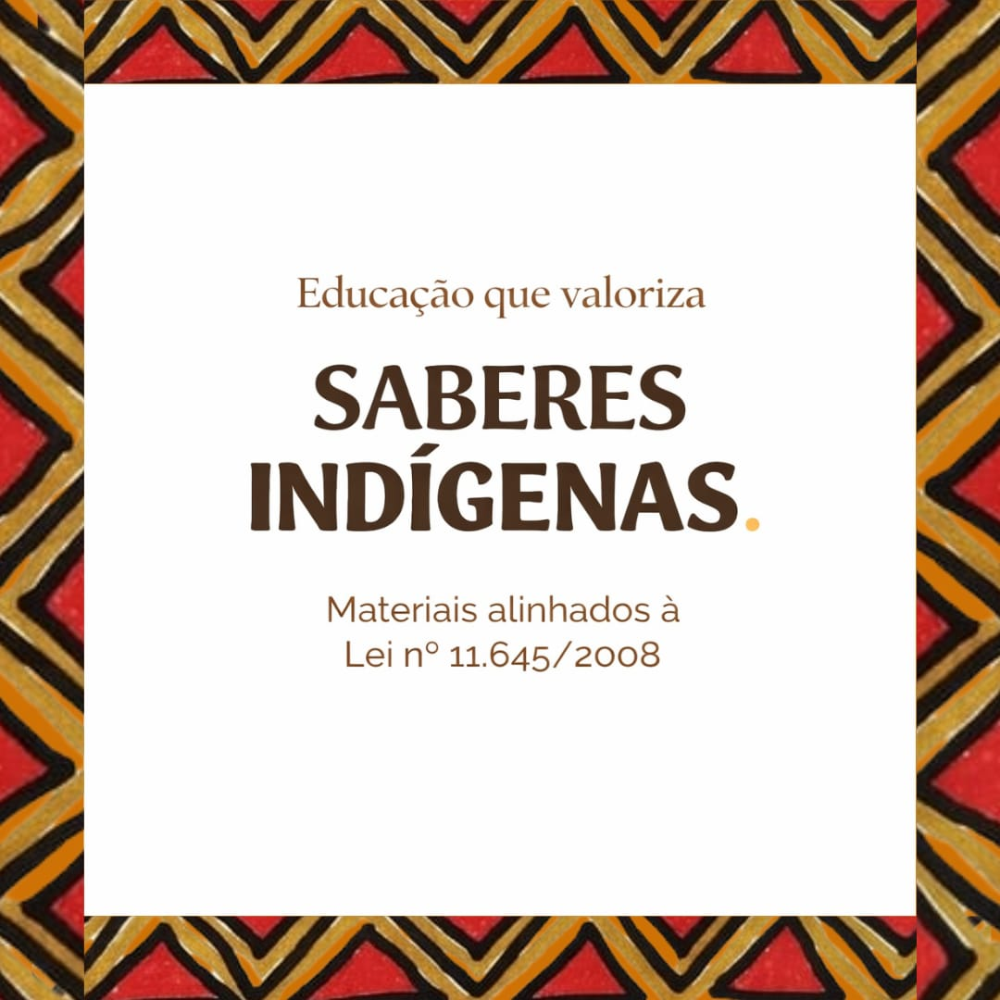

Nossa História e Propósito
O Mainó Arandu é um projeto educacional voltado à criação de materiais didáticos indígenas com foco no fortalecimento do pertencimento. Os conteúdos são pensados para contribuir com práticas pedagógicas que valorizem a identidade cultural. A proposta é oferecer recursos que auxiliem educadores na construção de um ensino mais inclusivo, significativo e conectado com a realidade dos povos indígenas.
Os materiais didáticos são desenvolvidos com base na vivência da cultura indígena, com foco no desenvolvimento linguístico, cultural e social das crianças. Promovendo o contato com a língua e sua valorização. Os materiais lúdicos complementam esse processo, possibilitando práticas pedagógicas mais dinâmicas, interativas e significativas em sala de aula.

Mais do que conteúdo, é preservação cultural
Educar é valorizar quem somos.
Apoie a valorização da cultura indígena.
Sua participação ajuda a produzir novos materiais didáticos e ampliar o alcance deste projeto educativo.